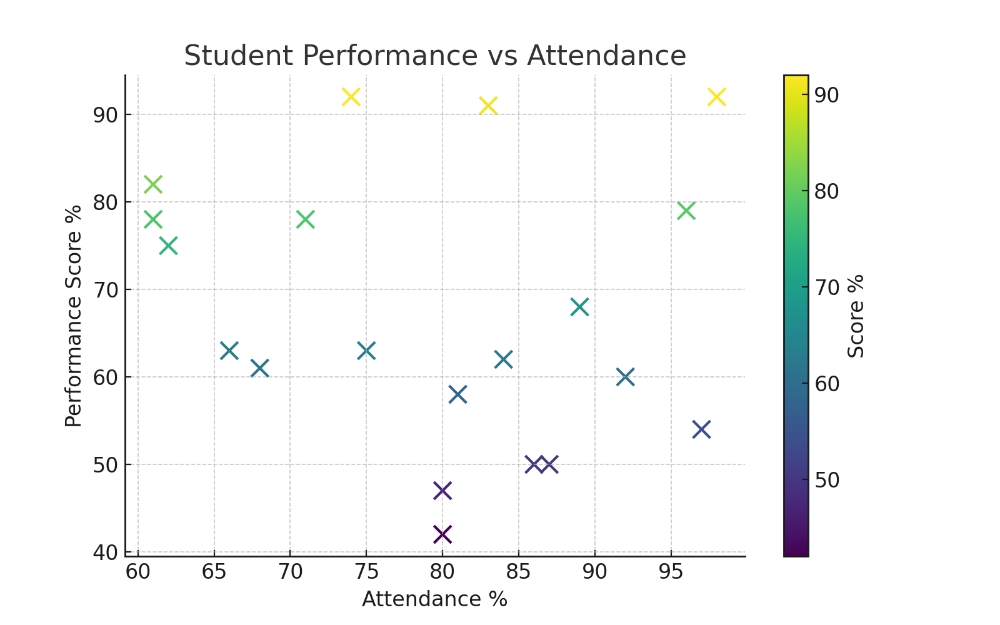
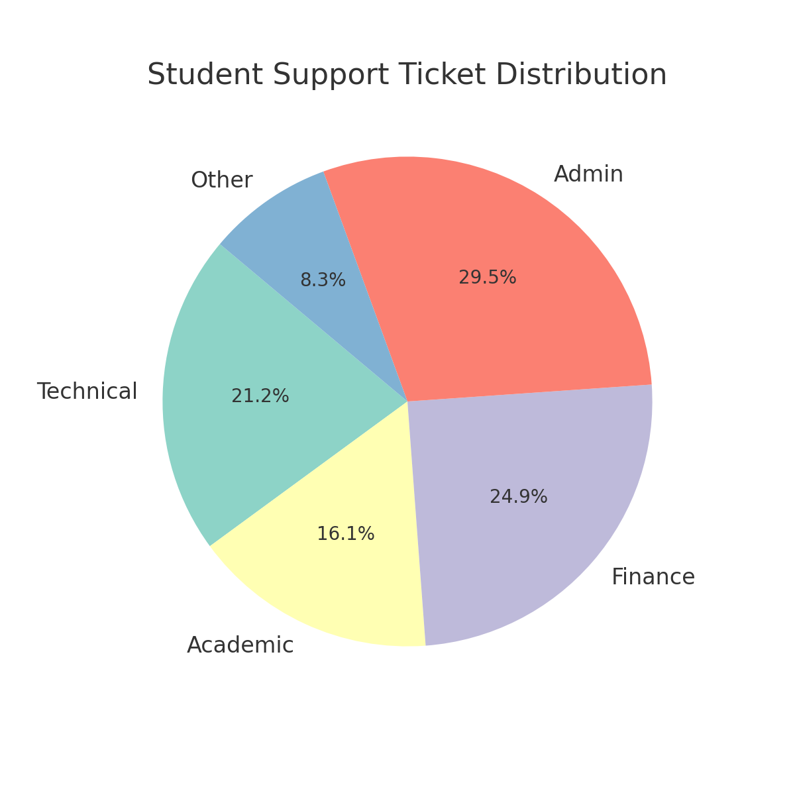
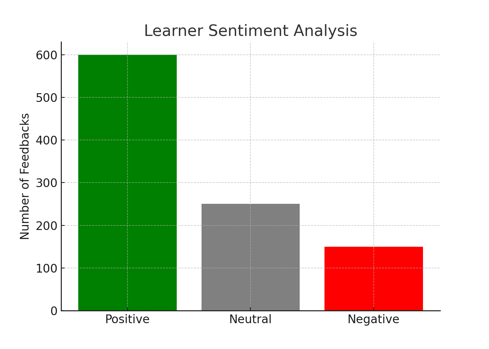
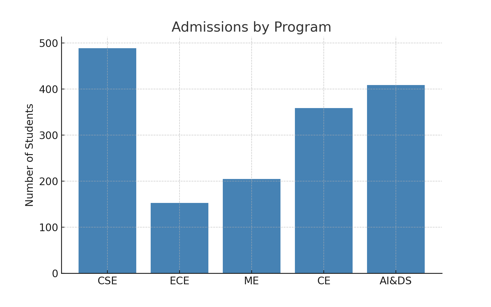

Key Projects
Student Performance & Engagement Dashboard
Python + scikit-learn + Power BI | Forecasted academic performance with 85% accuracy → retention improved by 24%.
Industry–Academia Skill Gap Analytics
Python + Power BI + NLP | Parsed 1,000+ job postings → aligned curriculum with market demand → job readiness +35%.

Student Support Ticket Analysis
SQL + Power BI + NLP | Analyzed 5,000+ queries → reduced resolution time by 20%, improved satisfaction by 18%.
Learner Sentiment Analysis
Python + NLP + Power BI | Analyzed 10,000+ learner feedbacks → boosted retention by 20%.
College Admission Analytics
Power BI + Excel | Built drill-down reports segmented by demographics & programs → enrollment in target disciplines +20%.
